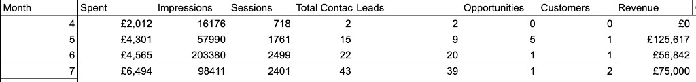
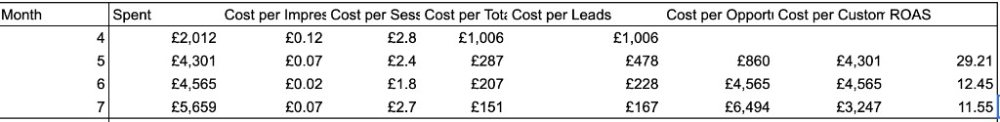

From 3 channels
to a full-funnel
growth engine.
How I rebuilt a narrow, intent-only paid model into an integrated demand engine spanning awareness, authority, interest and conversion, and drove a step-change in reach, efficiency and pipeline in a matter of months.
Growth had stalled
Three intent-only channels captured existing demand but created none. Sales got contacts, not qualified buyers.
Own the whole journey
Prove that a demand engine, not more keywords, would grow qualified pipeline efficiently.
Rebuilt the funnel
Awareness to decision, budget run as a weekly testing engine, tied to sales with a sub-3-hour SLA.
A step-change
12× reach, cost per contact down 85%, and roughly 15× blended ROAS across four months.
The audience, the journey, the big idea.
Indeed Flex is a staffing marketplace selling into HR, operations and finance leaders. The old model only spoke to people already searching. The opportunity was to own the whole buyer's journey, not just the last click.
Who we targeted
B2B decision-makers in staffing-heavy sectors like hospitality, logistics, retail and events, with an ABM overlay on named enterprise accounts. Segmented by seniority × job function × industry × location, so each stage could widen for reach or tighten onto target accounts.
The buyer's journey
A considered, multi-stakeholder purchase. Buyers move from unaware of a better model → recognising the cost of the status quo → trusting us → requesting a demo. The funnel had to nurture that shift, not skip it.
The core message
Reframe temporary staffing from a grudge purchase into a strategic advantage: the pain we solve, the service we offer, the result of working with us. Educational at the top, proof-led in the middle, direct at the bottom.
A full funnel is how you actually move enterprise accounts.
For most SaaS, the real prize is large enterprise logos, and those are won with account-based marketing, not one-off clicks. This engine doubles as an ABM motion: broad awareness warms the whole buying committee, account-level retargeting keeps target accounts surrounded through authority and interest, and BOFU converts engaged accounts into demos.
The old model did one job well. Everything else, not at all.
Strategy is only as good as the model underneath it, and the old one leaked. Three intent-only channels captured demand but never created it, and only reached buyers at the moment of decision. Here is the before and after, and exactly what the rebuild fixed.
 SEO
SEO


Weak TOFU mix. Capture only, no demand creation.
Full-funnel TOFU that creates demand, not just harvests it.
Invisible to the 95% of buyers not yet searching.
Broad + intent audiences reach the unaware, then re-engage.
No authority or retargeting to build trust.
Trust sequence: case studies, testimonials, G2 and awards.
Leads went cold in the gaps between touch points.
CRM nurture: drip sequences, newsletters, lead enrichment.
Slow sales follow-up that let intent decay.
Sub-3-hour lead SLA with a weekly sales quality sync.
Volume without qualification. Low lead-to-opportunity rate.
Qualified pipeline: cost per contact down, SQL quality up.
One funnel, four jobs. Every stage, end to end.
Each stage has its own goal, objective and tracked KPIs, its own audience and message. Every retargeting stage re-engages the people who leaned in one step earlier. Here is the whole engine on a single page.
demand
Audience & targeting
Broad, cold audience discovering the category, widened around named Tier-1 target accounts.
Channels & platforms
SEO
Most budget goes to precise targeting (LinkedIn, Google Ads), with YouTube for cheap reach.
Content type
Core message
100% educational, no lead-gen. Lead with the pain we solve, the service we offer, and the result of working with us.
trust
Audience & targeting
Warm audience that already knows us, including target accounts showing early intent.
Channels & platforms


Content type
Core message
They already know us, so build trust. Proof, G2 & Gartner credibility, and why we beat traditional staffing agencies.
interest
Audience & targeting
Actively researching a solution, with target accounts surfacing clear buying signals.
Channels & platforms
Content type
Core message
High-value gated magnets worth paying for. Four-field forms: core service, how we differ, expected result, cost of inaction.
Audience & targeting
High-intent, sales-ready accounts with the full buying committee engaged, handed to sales.
Channels & platforms
Content type
Core message
Direct response. Click-only ads capturing phone + context straight to sales. Reply within hours.
Planned, built and optimised across
SEO
Budget as a testing engine, not a spray.
A blueprint is a plan; this is how it was run. The point was never to spend more, it was to learn what worked, then pour budget into it. Here's how targeting, budget and creative moved week to week.
Targeting structure
Layered audiences per stage: broad (seniority × function × industry × location) at TOFU, 30-day retargeting at authority & interest, and high-intent + competitor keywords at BOFU. Spotlight and conversation ads for named accounts.
Budget allocation
Doubled spend in May (£2k → £4.5k) to fund upper-funnel testing, then capped at £4.5k across June and July. Efficiency, not budget, drove the gains, by reallocating toward the campaign types that were compounding.
Creative system
Format matched to intent: video & carousel for awareness, document & case-study ads for authority, conversation & lead-gen forms for interest, single-image direct-response for decision. Repurpose first, then build new.
The weekly optimisation loop
Read the signal
Review reach, CPM, CPS, CPL and lead quality by campaign and stage.
Cut & scale
Pause underperformers, shift budget to compounding campaigns and audiences.
Test creative
Rotate new hooks, formats and lead magnets against the current control.
Close the loop
Sync with sales on lead quality, feed learnings back into next week's plan.
Reach up, cost down, pipeline real.
Reported monthly to marketing leadership and sales. Two stories: efficiency at the top of the funnel, and economics at the bottom. All figures rebuilt from the campaign's own reporting.
Reach & efficiency
Reach scaled to a June peak, then budget shifted down-funnel in July (Apr → Jul)
Traffic & cost per session
Sessions up ~3×, cost per session lowest through June (Apr → Jul)
Cost per contact
Form-submitted contact cost down 85% (£1,006 → £151)
Cost per lead
Cost per qualified lead down 83% (£1,006 → £167)
From spend to signed customers.
Four months turned £17.4k of media into a qualified pipeline and closed revenue. By July, with the top of funnel primed, we deliberately moved budget down-funnel: reach eased on purpose while contacts nearly doubled (22 to 43) and the first customers closed. The engine had matured from buying attention to harvesting pipeline.
Numbers rebuilt from the campaign's own GA & CRM reporting. Figures span April to July; ROAS shown blended across the period.
We didn't spend more. We built a system that turns attention into pipeline, so every pound of media worked about 15× harder.
A full funnel needs more content than any one team can make.
Reach and pipeline like this are never a marketing-only win. So I ran content like inventory: reuse what we already had, and co-build the gaps with the team that owned each asset. Across four stages we reused about half the content and created the other half together.
The plan was only half the job. Here is how the partnerships actually delivered it.
Speed & feedback
Agreed a <3-hour lead response SLA and a weekly quality sync. Sales feedback reshaped targeting and lead-magnet offers in real time.
Positioning & voice
Co-built strong taglines, video intros and brand positioning so TOFU creative felt like one company, not one-off ads.
The fuel
Repurposed existing assets first, then produced gated magnets, reports and case studies good enough to charge for.
Proof & access
Stood up a demo environment, free-trial access and product-update newsletters to make BOFU tangible.
When it didn't go to plan
Early lead volume spiked but lead-to-opportunity conversion lagged. Sales was getting contacts, not qualified buyers. The upper-funnel push had outpaced qualification.
How we fixed it
Tightened lead-gen forms to four decision-oriented fields, added lead enrichment before hand-off, and used the sales quality sync to re-weight audiences. CPL fell and SQL quality rose the following month. That fix is exactly why the next thing I built was an enrichment agent.
The engine behind the engine.
Good calls still need an engine to run on. The campaign ran on a lightweight operational stack, plus a prospecting AI agent I built as the sales-enablement layer for the ABM motion, turning warmed target accounts into closed enterprise deals.
CRM & tracking
HubSpot as the source of truth for contacts, stages, attribution and drip sequences in one place.
Reporting layer
Weekly reach/efficiency and monthly funnel-economics views leadership could read in a glance.
Test backlog
A prioritised queue of audiences, creatives and magnets so every week shipped a learning.
AI outreach
A prospecting agent enriching accounts and personalising multichannel outreach for sales.
The prospecting AI agent
Goal: power the ABM motion and help sales close large accounts. The agent enriches target accounts, uncovers buying signals, finds the right decision-maker, prioritises the highest-value accounts and personalises outreach at scale across UK and US markets.
Company enrichment
Firmographic & signal data appended per account.
Lead research
Detailed research to uncover buying signals.
Lead enrichment
Find the right decision-maker & contact path.
Prioritise
Rank accounts & actions by likelihood to convert.
Personalise
High-quality, multichannel outreach content.
Integrate
Pushed into CRM & sequences for UK/US agents.
The calls I made, and the ones I turned down.
Every choice had a credible alternative. Here is what I chose, what I rejected, and the evidence that would make me change my mind.
Pouring the whole budget into bottom-funnel PPC and competitor terms.
Capture was already saturated. The only path to growth was reaching buyers before they searched.
An incrementality test showed upper-funnel wasn't lifting qualified pipeline.
Spending the full available budget every month to maximise raw volume.
The goal was a repeatable engine. Capping spend forced efficiency gains that compound.
Marginal cost per acquisition stayed flat while clear budget headroom existed.
Maximising lead count with frictionless, minimal-qualification forms.
Sales needed buyers, not contacts. Four decision-oriented fields plus enrichment beat volume.
A high-volume model converted better to SQLs and closed-won downstream.
What I'd do differently next time.
The rebuild worked, but it's never finished. Three things I'd change if I ran it again.
Qualify before I scale
I'd stand up lead scoring and enrichment before opening the top of the funnel, so the sales quality gap never appears in the first place.
Measure incrementality
With more time I'd run geo or holdout tests to prove upper-funnel's true contribution, rather than relying on last-touch attribution.
Longer creative runway
Awareness creative compounds slowly. I'd give brand and content a head start so TOFU has depth from week one, not week four.
Where the numbers come from.
The charts above are rebuilt from the campaign's own reporting. Here are the raw monthly source tables, kept out of the main flow so the story stays clean.
Volume by month
Spend, impressions, sessions, contacts, leads, opportunities, customers and revenue, April to July.

Cost & ROAS by month
Cost per impression, session, contact, lead, opportunity and customer, plus ROAS, April to July.
